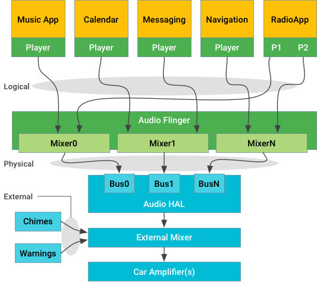

This section details the audio architecture for automotive-related Android implementations. OEMs and other Android developers implementing an automotive audio system should review all content in this section thoroughly in addition to content in the main Audio section.
Key concepts
Android is responsible for infotainment sounds (that is, media, navigation, and communications) but isn't directly responsible for chimes and warnings that have strict availability and timing requirements. External sources are represented by apps, which are responsible for audio focus. However, you can't rely on focus for sound selection and mixing.
Android 10 includes the following changes to automotive-related audio support:
- The Audio HAL context maps to
AudioAttributes.usageto identify sounds; the Audio HAL implementation is responsible for context-specific mixing/routing. - Vehicles define a generic output device
(
AUDIO_DEVICE_OUT_BUS) for use in vehicle audio systems; Android supports oneAUDIO_DEVICE_OUT_BUSinstance per Context. IAudioControl HALprovides vehicle-specific extensions to the Audio HAL; for an example implementation, refer todevice/generic/car/emulator/audio. Android 9 doesn't includeAUDIO_* VHALproperties.
Android sounds and streams
Automotive audio systems handle the following sounds and streams:
Android manages the sounds coming from Android apps, controlling those apps and routing their sounds to individual streams at the HAL based on the type of sound:
- Logical streams, known as sources in core audio nomenclature, are tagged with AudioAttributes.
- Physical streams, known as devices in core audio nomenclature, have no context information after mixing.
For reliability, external sounds (coming from independent sources such as seat
belt warning chimes) are managed outside Android, below the HAL or even in
separate hardware. System implementers must provide a mixer that accepts one
or more streams of sound input from Android and then combines those streams in
a suitable way with the external sound sources required by the vehicle.
External streams can be always on, or controlled with
createAudioPatch entry points in the HAL.
The HAL implementation and external mixer are responsible for ensuring the safety-critical external sounds are heard and for mixing in the Android-provided streams and routing them to suitable speakers.
Android sounds
Apps may have one or more players that interact through the standard
Android APIs (for example,
AudioManager
for focus control or
MediaPlayer
for streaming) to emit one or more logical streams of audio data. This data
could be single channel mono or 7.1 surround, but is routed and treated as a
single source. The app stream is associated with
AudioAttributes that give the system
hints about how the audio should be expressed.
The logical streams are sent through AudioService and routed
to one (and only one) of the available physical output streams, each of which
is the output of a mixer within AudioFlinger. After
the audio attributes have been mixed down to a physical stream, they
are no longer available.
Each physical stream is then delivered to the Audio HAL for rendering on the hardware. In automotive apps, rendering hardware can be local codecs (similar to mobile devices) or a remote processor across the vehicle's physical network. Either way, it's the job of the Audio HAL implementation to deliver the actual sample data and cause it to become audible.
External streams
Sound streams that shouldn't be routed through Android (for certification or timing reasons) may be sent directly to the external mixer. In many cases, Android doesn't need to know that these sounds exist as the external mixer can mix them over Android sounds. If a sound needs to be ducked or routed to different speakers, the external mixer can do that invisibly to Android.
If external streams are media sources that should interact with the sound
environment Android is generating (for example, stop MP3 playback when an external
tuner is turned on), those external streams should be represented by an
Android app. Such an app would request audio focus and respond to focus
notifications by starting/stopping the external source as necessary to fit
into the Android focus policy. One suggested mechanism to control such
external devices is AudioManager.createAudioPatch().
Audio focus
Before starting a logical stream, an app should request audio focus using the same audio attributes as it will use for its logical stream. While sending such a focus request is recommended, it isn't enforced by the system. Some apps may explicitly skip sending the request to achieve specific behaviors (for example, to intentionally play sound during a phone call).
For this reason, you should consider focus as a way to indirectly control and deconflict the media playback and not as a primary audio control mechanism; the vehicle shouldn't depend on the focus system for operation of the audio subsystem. Focus awareness is not part of the HAL and should not be used to influence audio routing.
Output bus
At the Audio HAL level, the device type AUDIO_DEVICE_OUT_BUS
provides a generic output device for use in vehicle audio systems. The bus
device supports addressable ports (where each port is the end point for a
physical stream) and is expected to be the only supported output device type
in a vehicle.
A system implementation can use one bus port for all Android sounds, in which case Android mixes everything together and delivers it as one stream. Alternatively, the HAL can provide one bus port for each context to allow concurrent delivery of any sound type. This makes it possible for the HAL implementation to mix or duck the different sounds as desired.
The assignment of contexts to bus ports is done through the audio control HAL and creates a many:one relationship between contexts and bus ports.
Microphone input
When capturing audio, the Audio HAL receives an openInputStream
call that includes an AudioSource argument indicating how the
microphone input should be processed.
The VOICE_RECOGNITION source (specifically the Google Assistant) expects a
stereo microphone stream that has an echo cancellation effect (if available)
but no other processing applied to it. Beamforming is expected to be done by
the Assistant itself.
Multi-channel microphone input
To capture audio from a device with more than two channels (stereo), use a
channel index mask instead of positional index mask (such as
CHANNEL_IN_LEFT). Example:
final AudioFormat audioFormat = new AudioFormat.Builder()
.setEncoding(AudioFormat.ENCODING_PCM_16BIT)
.setSampleRate(44100)
.setChannelIndexMask(0xf /* 4 channels, 0..3 */)
.build();
final AudioRecord audioRecord = new AudioRecord.Builder()
.setAudioFormat(audioFormat)
.build();
audioRecord.setPreferredDevice(someAudioDeviceInfo);
When both setChannelMask and setChannelIndexMask
are set, AudioRecord uses only the value set by
setChannelMask (maximum of two channels).
Concurrent capture
The Android framework doesn't allow concurrent capture for most input audio
device types but makes exceptions for AUDIO_DEVICE_IN_BUS and
AUDIO_DEVICE_IN_FM_TUNER by handling them as virtual devices.
Doing so means the framework assumes that there's no competition for resources
among these devices and thus any/all of them are allowed to be
captured concurrently along with one regular input device (such as the
microphone). If hardware constraints on concurrent capture do exist
among these devices, such constraints must be handled by custom
app logic in the first-party apps designed to use these input
devices.
Apps designed to work with AUDIO_DEVICE_IN_BUS devices or
with secondary AUDIO_DEVICE_IN_FM_TUNER devices must rely on
explicitly identifying those devices and using
AudioRecord.setPreferredDevice() to bypass the Android default
source selection logic.
Volume and volume groups
Android 8.x and lower supports three volume groups (ring, media, and alarm) along with a hidden group for phone in-call. Each group can be set to a different volume level based on the output device, such as higher volumes for speakers and lower volumes for headsets).
Android 9 and higher includes a speech volume group and the automotive-related contexts as shown below.
| Volume group | Audio contexts | Description |
|---|---|---|
| Ring | CALL_RING_CONTEXT |
Voice call ringing |
NOTIFICATION_CONTEXT |
Notifications | |
ALARM_CONTEXT |
Alarm sound from Android | |
SYSTEM_SOUND_CONTEXT |
System sound from Android | |
| Media | MUSIC_CONTEXT |
Music playback |
| Phone | CALL_CONTEXT |
Voice call |
| Speech | NAVIGATION_CONTEXT |
Navigation directions |
VOICE_COMMAND_CONTEXT |
Voice command session |
When the value for a volume group is updated, the framework's
CarAudioService handles setting the affected physical stream
gains. Physical stream volume in a vehicle is based on volume group (rather
than stream_type) and each volume group consists of one or more audio
contexts. Each instance of AudioAttributes.USAGE maps to an audio context in
CarAudioService and can be configured to be routed to an output
bus (see
Configuring
volume and
Configuring
volume groups).
Android 9 simplified controlling the hardware volume in the amplifier:
- Each volume group is routed to one or more output buses. The volume for a
specific group can be changed using the Car Settings UI or via an
externally generated
KEYCODE_VOLUME_DOWNorKEYCODE_VOLUME_UPkey event. - In response,
CarAudioServicecallsAudioManager.setAudioPortGain()with the audio device ports bound to targeted volume group. At the HAL, this appears as a series of one or more calls toIDevice.setAudioPortConfig()with the volume gain value for each physical output stream associated with the targeted volume group.
You can configure the maximum, minimum, and step gain value for each audio
device port in audio_policy_configuration.xml. For a sample
configuration and details on overriding the default set of volume groups, see
Configuring
audio devices.